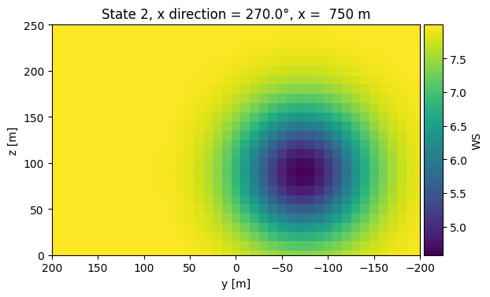
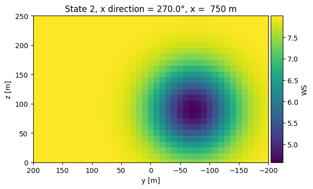
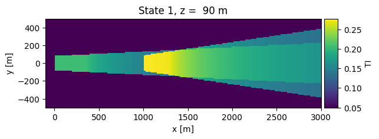
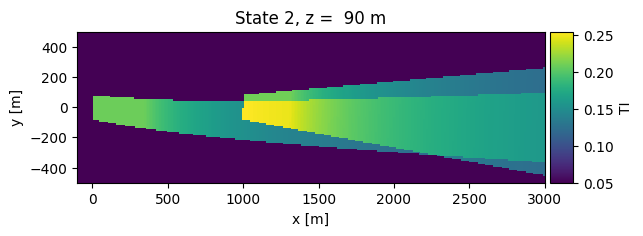
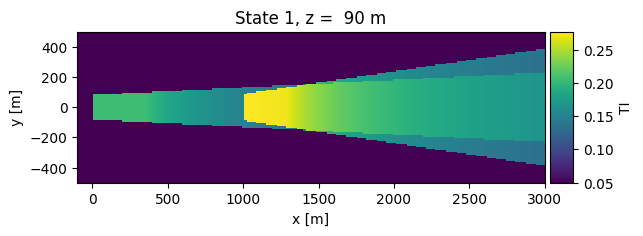
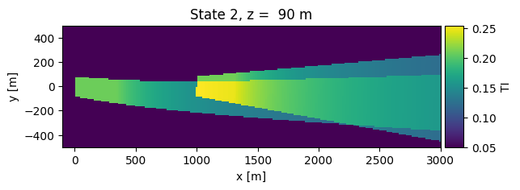

Yawed rotor wakes¶
This example demonstrates wake modelling for yawed wind turbine rotors, following Bastankhah & Porte-Agel. Let’s start by importing the required packages:
%matplotlib inline
import numpy as np
import pandas as pd
import matplotlib.pyplot as plt
import foxes
import foxes.variables as FV
/home/jonas/gits/wakes/foxes/foxes/core/engine.py:4: TqdmExperimentalWarning: Using `tqdm.autonotebook.tqdm` in notebook mode. Use `tqdm.tqdm` instead to force console mode (e.g. in jupyter console)
from tqdm.autonotebook import tqdm
Our aim in this example is to model two turbines that are located along the x axis, and uniform wind from west. Three states should be computed, with identical wind conditions, in a setup where the first turbine is yawed by 30, 0, -30 degrees, respectively.
We can realize these wind conditions with the StatesTable class, using a pandas.DataFrame object as data as source:
sdata = pd.DataFrame(index=range(3))
sdata[FV.WS] = 8.0
sdata[FV.WD] = 270.0
sdata
| WS | WD | |
|---|---|---|
| 0 | 8.0 | 270.0 |
| 1 | 8.0 | 270.0 |
| 2 | 8.0 | 270.0 |
states = foxes.input.states.StatesTable(
data_source=sdata,
output_vars=[FV.WS, FV.WD, FV.TI, FV.RHO],
fixed_vars={FV.RHO: 1.225, FV.TI: 0.05},
)
For each of these 3 states, and for each of the two turbines, we wish to set the yaw misalignment variable FV.YAWM. The following numpy.ndarray defines these angles, with shape (3, 2) representing (FC.STATE, FC.TURBINE) dimensions:
yawm = np.array([[30.0, 0.0], [0.0, 0.0], [-30.0, 0.0]])
yawm
array([[ 30., 0.],
[ 0., 0.],
[-30., 0.]])
For transferring these data to the variable FV.YAWM, we invoke the turbine model SetFarmVars, by adding it to the turbine_models section of the ModelBook:
mbook = foxes.ModelBook()
mbook.turbine_models["set_yawm"] = foxes.models.turbine_models.SetFarmVars()
mbook.turbine_models["set_yawm"].add_var(FV.YAWM, yawm)
Notice that this models appears together with the model yawm2yaw, which exists by default in the ModelBook:
farm = foxes.WindFarm()
farm.add_turbine(
foxes.Turbine(
xy=[0.0, 0.0],
turbine_models=["set_yawm", "yawm2yaw", "NREL5MW", "kTI_05"],
)
)
farm.add_turbine(
foxes.Turbine(
xy=[1000.0, 0.0],
turbine_models=["set_yawm", "yawm2yaw", "NREL5MW", "kTI_05"],
)
)
Turbine 0, T0: xy=(0.00, 0.00), set_yawm, yawm2yaw, NREL5MW, kTI_05
Turbine 1, T1: xy=(1000.00, 0.00), set_yawm, yawm2yaw, NREL5MW, kTI_05
The yawm2yaw updates the FV.YAW variable by adding FV.YAWM to the wind direction, i.e., the yaw misalignment defines the absolute rotor yaw in this case (in cases where the latter is set, you may want to include the inverse model yaw2yawm instead).
We can now create an Algorithm object and calculate the farm results. We combine the TurbOPark model with the classic wake deflection model by Jimenez et al.. Note that the usage of this model requires a wind vector superposition model, since it induces a wind vector rotation within the wake:
algo = foxes.algorithms.Downwind(
farm,
states,
rotor_model="centre",
wake_models=["TurbOPark_vector_ambka004", "CrespoHernandez_quadratic"],
wake_deflection="Jimenez",
mbook=mbook,
verbosity=0,
)
farm_results = algo.calc_farm()
DefaultEngine: Selecting engine 'single'
SingleChunkEngine: Calculating 3 states for 2 turbines
SingleChunkEngine: Starting calculation using a single worker.
SingleChunkEngine: Completed all 1 chunks
Once the wind farm results are ready we can continue and plot the wind field:
o = foxes.output.FlowPlots2D(algo, farm_results)
plot_data = o.get_states_data_xy(
FV.WS, resolution=10, xmin=-100, xmax=3000, verbosity=0
)
for fig in o.gen_states_fig_xy(plot_data):
plt.show()
DefaultEngine: Selecting engine 'process'
ProcessEngine: Calculating data at 31411 points for 3 states
ProcessEngine: Starting calculation using 191 workers, for 3 states chunks and 191 targets chunks.
ProcessEngine: Completed all 573 chunks


As well as some vertical cross sections some distance downstream:
o = foxes.output.FlowPlots2D(algo, farm_results)
plot_data = o.get_states_data_yz(
FV.WS, resolution=10, x=750, ymin=-200, ymax=200, zmin=0, zmax=250, verbosity=0
)
for fig in o.gen_states_fig_yz(plot_data):
plt.show()
DefaultEngine: Selecting engine 'single'
SingleChunkEngine: Calculating data at 1066 points for 3 states
SingleChunkEngine: Starting calculation using a single worker.
SingleChunkEngine: Completed all 1 chunks

 

Clearly, the model bends the wake and a frontal hit of the downstream rotor is avoided under yawed conditions. This also reflects in the rotor equivalent wind speed (REWS) values:
farm_df = farm_results.to_dataframe()
print("\nFarm results:\n")
print(farm_df[[FV.X, FV.WD, FV.YAW, FV.YAWM, FV.REWS]])
Farm results:
X WD YAW YAWM REWS
state turbine
0 0 0.0 270.000000 300.000000 30.0 8.000000
1 1000.0 267.310067 267.310067 0.0 7.153025
1 0 0.0 270.000000 270.000000 0.0 8.000000
1 1000.0 270.000000 270.000000 0.0 5.783960
2 0 0.0 270.000000 240.000000 -30.0 8.000000
1 1000.0 272.689933 272.689933 0.0 7.153025
The Jimenez model also generates a change of the wind direction along the wake path, i.e., a rotation of the wind vector:
o = foxes.output.FlowPlots2D(algo, farm_results)
plot_data = o.get_states_data_xy(
FV.WD, resolution=10, xmin=-100, xmax=3000, verbosity=0
)
for fig in o.gen_states_fig_xy(plot_data):
plt.show()
DefaultEngine: Selecting engine 'process'
ProcessEngine: Calculating data at 31411 points for 3 states
ProcessEngine: Starting calculation using 191 workers, for 3 states chunks and 191 targets chunks.
ProcessEngine: Completed all 573 chunks


Other wake deflection models, like JimenezProj, JimenezPath or Bastankhah2016 do not affect the wind direction variable.
By default, the turbine type models in foxes apply \(\cos(\gamma)^p\) type yaw corection factors to the variables FV.P and FV.CT, where \gamma is the yaw misalignment angle (i.e., FV.YAWM translated to radiants), and p is a constant exponent (in fact there is one for power and another for thrust). These exponents can be setup as desired, here the default values \(p_P = 1.88\) and \(p_{ct}=1.0\) were invoked.
Note that the yawed wake frame can bend any kind of wake model. For example, we invoked the CrespoHernandez model for turbulence intensity wake effects above. This wake model follows the same bending rules as the wind deficit model, even though it is a simple top-hat type model:
o = foxes.output.FlowPlots2D(algo, farm_results)
plot_data = o.get_states_data_xy(
FV.TI, resolution=10, xmin=-100, xmax=3000, verbosity=0
)
for fig in o.gen_states_fig_xy(plot_data):
plt.show()
DefaultEngine: Selecting engine 'process'
ProcessEngine: Calculating data at 31411 points for 3 states
ProcessEngine: Starting calculation using 191 workers, for 3 states chunks and 191 targets chunks.
ProcessEngine: Completed all 573 chunks
 


